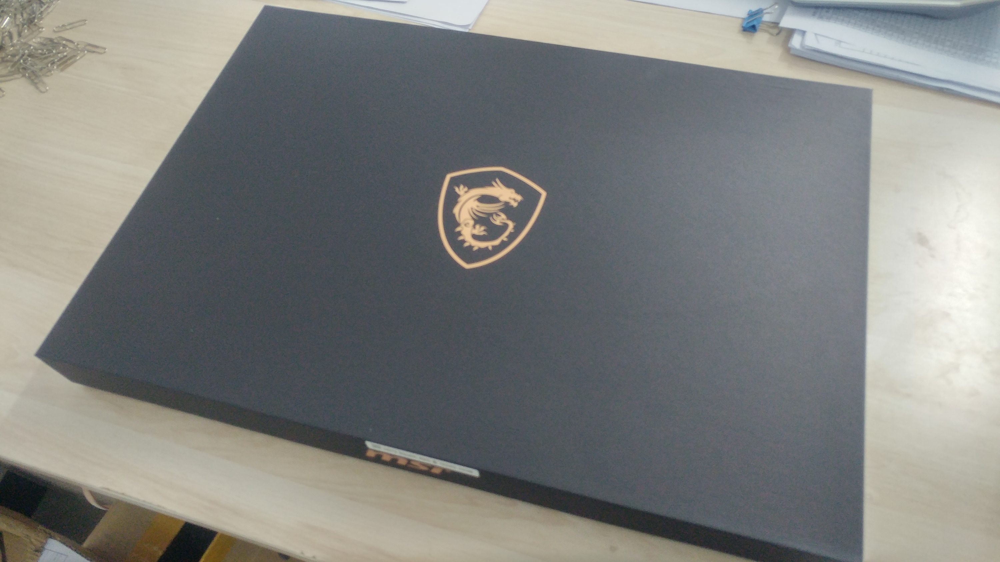

Blue
大家好，我月球鸽子皇时隔一年又来咕咕咕测试了，GS75皇帝版到手用了也有两周多了，中间换了下内存和硅脂，当初3月底换机器曾想了一晚上，本来已经下单国行GX701，因为开始GS75只有80W的2080VBIOS，性能表现比GX701弱10%，老莱同志的吹水视频理论性测试更是能差15%，但是在我下单后，PY人士告诉我GS75的90W VBIOS已经UPUP，果断退订GX701上GS75皇帝版，省下五千多，可以买一条2T蓝盘+2T EX950还有多，拓展性万岁
想了想，还是在写别的之前随便放个伪开箱图顺便对比一下小老弟GS65吧，200元手机画质*差别吐槽了，可以看到GS75在基本没加机身宽度的情况下，塞进了17寸屏幕，主要功臣为缩小了超多的下巴和变成了半下沉式的转轴部分。
 |
sky:楼主 gs75和thinkpad的键盘 革命的机械键盘比 哪个手感会好点啊 |
| 2019-04-01 |